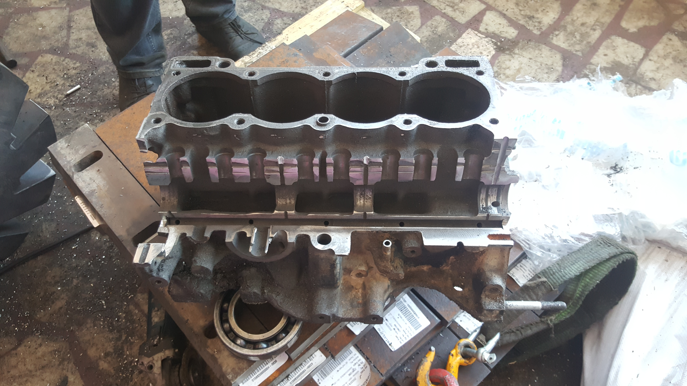

Motor bloğunda yağlama kanallarının görünür hâle getirilmesi
Renault Toros motor bloğunun kesilmesiyle yağlama kanallarının incelenmesi ve motor yağlama sisteminin fiziksel örnek üzerinden anlatımı.

Yağlama kanallarını göstermek amacıyla kesilmiş Renault Toros motor bloğu. Bitirme raporu, Şekil 7.1.
Görseli tam boyutta açAmaç
Motor içindeki yağlama yollarını fiziksel bir örnek üzerinde göstermek amacıyla Renault Toros motor bloğundaki yağ kanallarını kesit alarak görünür hâle getirmek.
Süreç ve Katkım
Motor bloğunu temin ettim, kesimi gerçekleştirecek işletmeyi buldum ve kesim sürecini organize ettim. Raporu gözden geçirerek hazırlanmasına katkı sağladım. İki kişilik projede, proje ortağım rapor hazırlığına ve bütçeye katkıda bulundu.
Teknik Kapsam
Çalışmada yağlama sisteminin bileşenleri ve görevleri ele alındı. Kesilmiş motor bloğu, raporda açıklanan yağ kanallarını fiziksel bir örnek üzerinden incelemek ve anlatmak için kullanıldı.
Çıktı
Yağlama kanalları görünür hâle getirilmiş bir motor bloğu ve motor yağlama sistemini açıklayan ortak bitirme raporu.